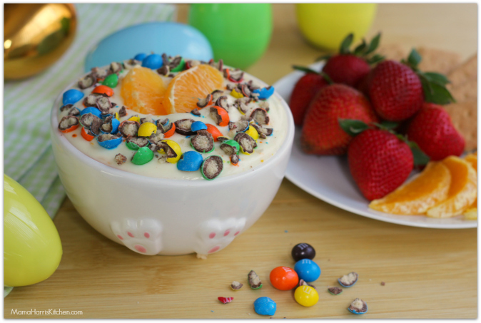

Home
Fit Yogurt

This is the perfect dessert to help you on your journey to stay fit and healthy! While being low in calories it remains incredibly delicious. You can't go wrong choosing this option.
--Ingredients--
--Directions--
- First, get your scale out and measure out 170 grams of your yogurt in a bowl.
- Second, add in the M&M's and whatever other toppings you choose.
- Third, dig in! It really it that easy!
--Calories--
- Great Value Light Greek Vanilla Nonfat Yogurt - 100 calories
- M&M's Minis Milk Chocolate Candy - 120 calories
- Total - 220 calories